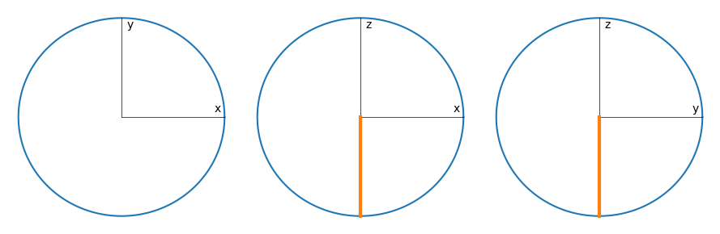
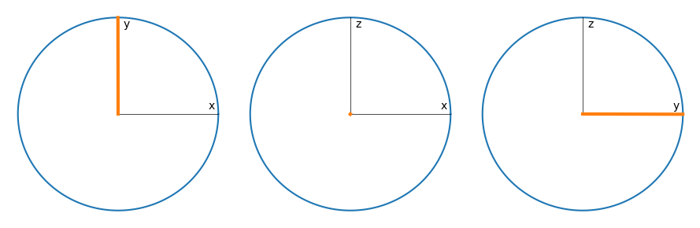
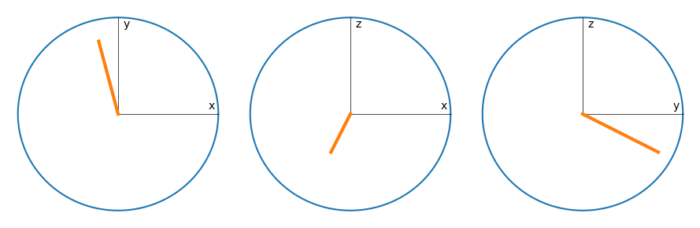

This notebook can be found on github
Ramsey spectroscopy of two-level atom ensemble
Consider an ensemble of two-level atoms (spin-1/2 particles) with transition frequency $\omega_{a}$ subject to decay. The Hamiltonian of the system is
$H_{at} = \frac{\Delta}{2}\sum_i\sigma_i^z,$
where $\Delta = \omega_a - \omega_l$ and $\omega_l$ is a reference frequency. We describe the decay with rate $\gamma$ via the Lindblad term
$\mathcal{L}[\rho] = \frac{\gamma}{2}\sum_i\left(2\sigma_i^-\rho\sigma_i^+ - \sigma_i^+\sigma_i^-\rho - \rho\sigma_i^+\sigma_i^-\right).$
Say we want to perform a Ramsey interferometry scheme on this ensemble. This is done in three stages:
A laser pulse (laser frequency $\omega_l$) with amplitude $\eta$ is applied for a time $T$ such that $\eta T=\frac{\pi}{4}$ ($\pi/2$-pulse).
The ensemble is left to evolve freely under the Hamiltonian $H_{at}$ and the Liouvillian $\mathcal{L}[\rho]$.
Finally, another $\pi/2$-pulse is applied and the total population inversion $\sum_i\langle\sigma_i^z\rangle$ is measured.
using QuantumOpticsusing PyPlotN = 2 # Atom numberγ = 0.1 # Decay rateΔ = 0.05 # Detuningη = 15.0 # Pulse strengthT = π/4η # Length for pulseTsteps = 101Tlist = collect(range(0, stop=T, length=Tsteps))τ = γ == 0 ? 1.0 : 0.5/γ # Length of free time evolution; 1.0 if γ=0, else 0.5/γτsteps = 201τlist = collect(range(0, stop=τ, length=τsteps))b_atom = SpinBasis(1//2)b_coll = tensor([b_atom for i=1:N]...)# Single atom operatorssm(i) = embed(b_coll, i, sigmam(b_atom))sp(i) = embed(b_coll, i, sigmap(b_atom))sz(i) = embed(b_coll, i, sigmaz(b_atom))# Collective operatorsSx = 0.5*sum(sm.(1:N) + sp.(1:N))Sy = 0.5im*sum(sm.(1:N) - sp.(1:N))Sz = 0.5*sum(sz.(1:N))H_at = Δ*SzThe Hamiltonian of the driving laser is $H_l = \eta\sum_i\left(\sigma_i^- + \sigma_i^+\right)=2\eta S_x.$
H_l = 2η*Sx;J = [sm(i) for i=1:N]rates = [γ for i=1:N]ψ₀ = tensor([spindown(b_atom) for i=1:N]...)A convenient way to illustrate a quantum state is the so-called Bloch sphere, which can be generalized to a collection of atoms. The collective Bloch vector is defined by
$\vec{B} = \left(\langle S_x\rangle, \langle S_y\rangle, \langle S_z\rangle\right)^\mathrm{T}$.
We define a function to calculate this vector.
bloch(ρ) = [real(expect(s, ρ)) for s=[Sx, Sy, Sz]]The Bloch vector of the initial state (all atoms in the ground state) then points downwards on the sphere.
# Plot a circle with x and y labels (the Bloch sphere from different sides)function plot_circle(x, y) ϕ = collect(range(0, stop=2π, length=201)) plot(cos.(ϕ), sin.(ϕ)) # Label circle axes text(0.9, 0.05, x) text(0.05, 0.9, y) # Draw axes plot([0, 0], [0, 1], "k", lw=0.5) plot([0, 1], [0, 0], "k", lw=0.5)endbloch0 = bloch(dm(ψ₀))fig = figure(figsize=(9, 3))ax1 = subplot(131)plot_circle("x","y")plot([0, bloch0[1]], [0, bloch0[2]], lw=3)ax1.axis("off")ax2 = subplot(132)plot_circle("x", "z")plot([0, bloch0[1]], [0, bloch0[3]], lw=3)ax2.axis("off")ax3 = subplot(133)plot_circle("y", "z")plot([0, bloch0[2]], [0, bloch0[3]], lw=3)ax3.axis("off")tight_layout()
1) First $\pi/2$-pulse
Tout, ρT = timeevolution.master(Tlist, ψ₀, H_at + H_l, J; rates=rates)inv_π2 = sum([real(expect(sz(i), ρT)) for i=1:N])ρπ2 = ρT[end]; # State after first π/2-pulsebloch_π2 = bloch(ρπ2)fig = figure(figsize=(9, 3))ax1 = subplot(131)plot_circle("x","y")plot([0, bloch_π2[1]], [0, bloch_π2[2]], lw=3)ax1.axis("off")ax2 = subplot(132)plot_circle("x", "z")plot([0, bloch_π2[1]], [0, bloch_π2[3]], lw=3)ax2.axis("off")ax3 = subplot(133)plot_circle("y", "z")plot([0, bloch_π2[2]], [0, bloch_π2[3]], lw=3)ax3.axis("off")tight_layout()
2) Free time evolution
τout, ρτ = timeevolution.master(τlist, ρπ2, H_at, J; rates=rates);ρm = ρτ[end]; # State after free time evolutionbloch_m = bloch(ρm)fig = figure(figsize=(9, 3))ax1 = subplot(131)plot_circle("x","y")plot([0, bloch_m[1]], [0, bloch_m[2]], lw=3)ax1.axis("off")ax2 = subplot(132)plot_circle("x", "z")plot([0, bloch_m[1]], [0, bloch_m[3]], lw=3)ax2.axis("off")ax3 = subplot(133)plot_circle("y", "z")plot([0, bloch_m[2]], [0, bloch_m[3]], lw=3)ax3.axis("off")tight_layout()
3) Second $\pi$-2 pulse
Tout, ρT = timeevolution.master(Tlist, ρm, H_at + H_l, J; rates=rates)ρπ = ρT[end]; # Final state after second π/2-pulsebloch_π = bloch(ρπ)fig = figure(figsize=(9, 3))ax1 = subplot(131)plot_circle("x","y")plot([0, bloch_π[1]], [0, bloch_π[2]], lw=3)ax1.axis("off")ax2 = subplot(132)plot_circle("x", "z")plot([0, bloch_π[1]], [0, bloch_π[3]], lw=3)ax2.axis("off")ax3 = subplot(133)plot_circle("y", "z")plot([0, bloch_π[2]], [0, bloch_π[3]], lw=3)ax3.axis("off")tight_layout()
As you can see, for the chosen parameters we end up in a state near the fully inverted one, with an inversion of
print(bloch_π[3])0.7475443402325713Ramsey fringes
Now, in order to obtain the famous Ramsey fringes, we have to scan over the laser frequency, i.e. the detuning. To this end, we need to do the entire above procedure but for different detunings.
Let's write a function for the above procedure but allowing for different detunings that returns the final population inversion.
function ramsey(Δ) H_at = Δ*Sz Tout, ρ1 = timeevolution.master(Tlist, ψ₀, H_at + H_l, J; rates=rates) # First π/2-pulse τout, ρτ = timeevolution.master(τlist, ρ1[end], H_at, J; rates=rates) # Free time evolution Tout, ρ2 = timeevolution.master(Tlist, ρτ[end], H_at + H_l, J; rates=rates) # Second π/2-pulse real(expect(Sz, ρ2[end])) # Return resulting final inversionendΔ_ls = collect(range(-80, stop=80, length=501)) # List of detuningsSz_exp = ramsey.(Δ_ls)figure(figsize=(8, 4))plot(Δ_ls, Sz_exp)ylabel(L"$\langle S_z\rangle$")xlabel(L"$\Delta$")title("Ramsey fringes")